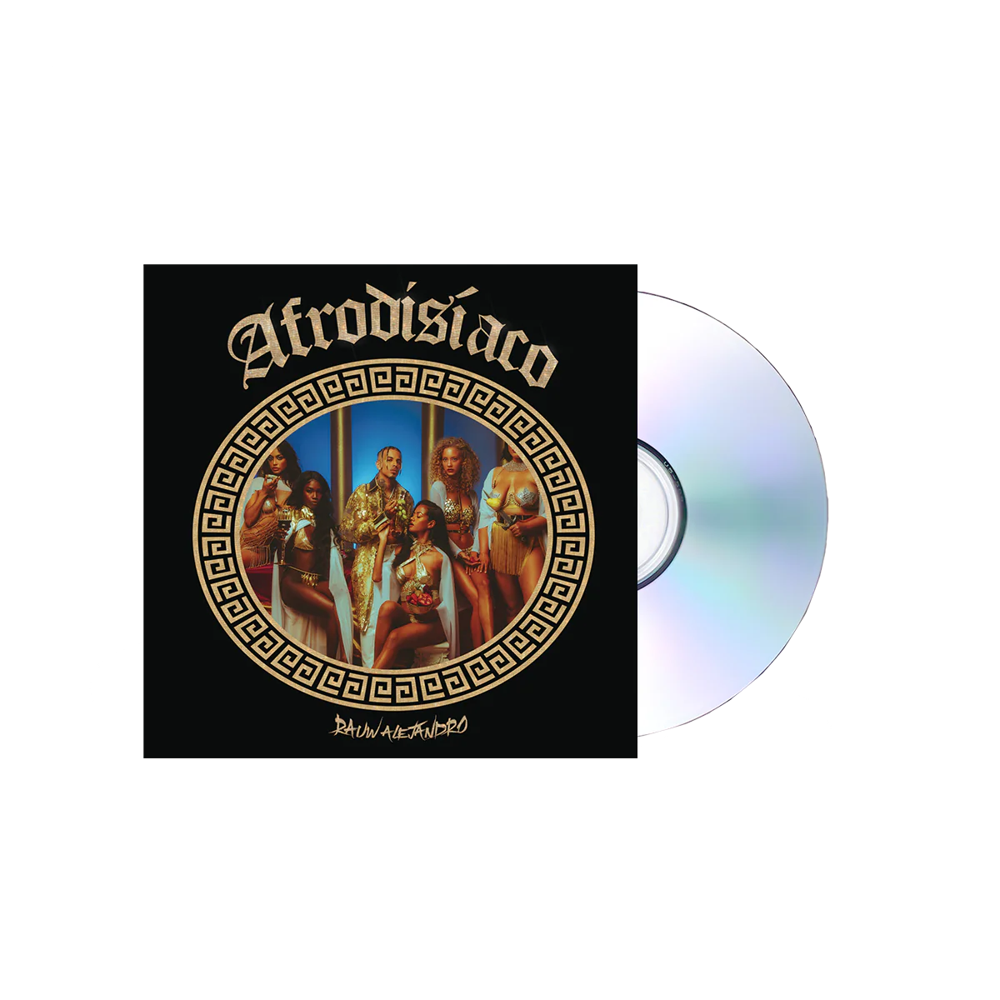
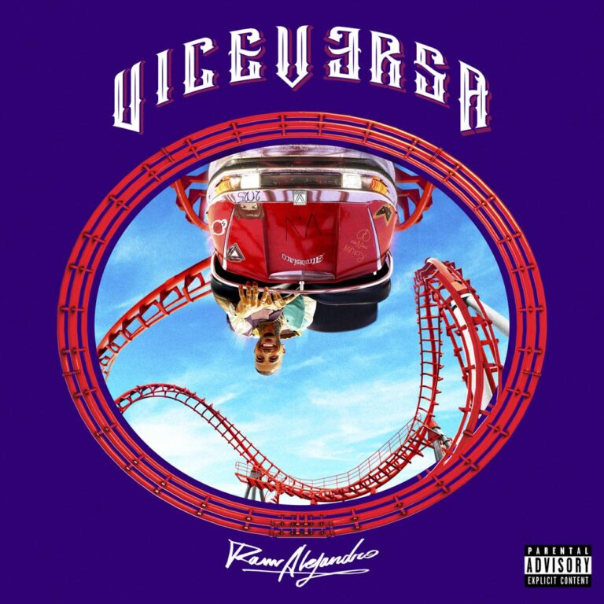
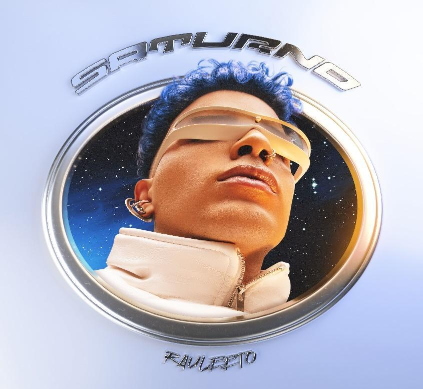

- Álbum debut de Rauw Alejandro.
- Incluye éxitos como "Tattoo".
- Mezcla reguetón y R&B.
- Lo lanzó al reconocimiento internacional.

- Álbum más experimental.
- Incluye el hit mundial "Todo de Ti".
- Fusión de pop, funk y reguetón.
- Gran éxito comercial.

- Inspirado en los años 90 y 2000.
- Sonido futurista y electrónico.
- Incluye colaboraciones destacadas.
- Explora nuevos estilos musicales.

- Álbum con concepto más maduro.
- Inspirado en sonidos clásicos.
- Incluye varias colaboraciones.
- Consolidación artística.